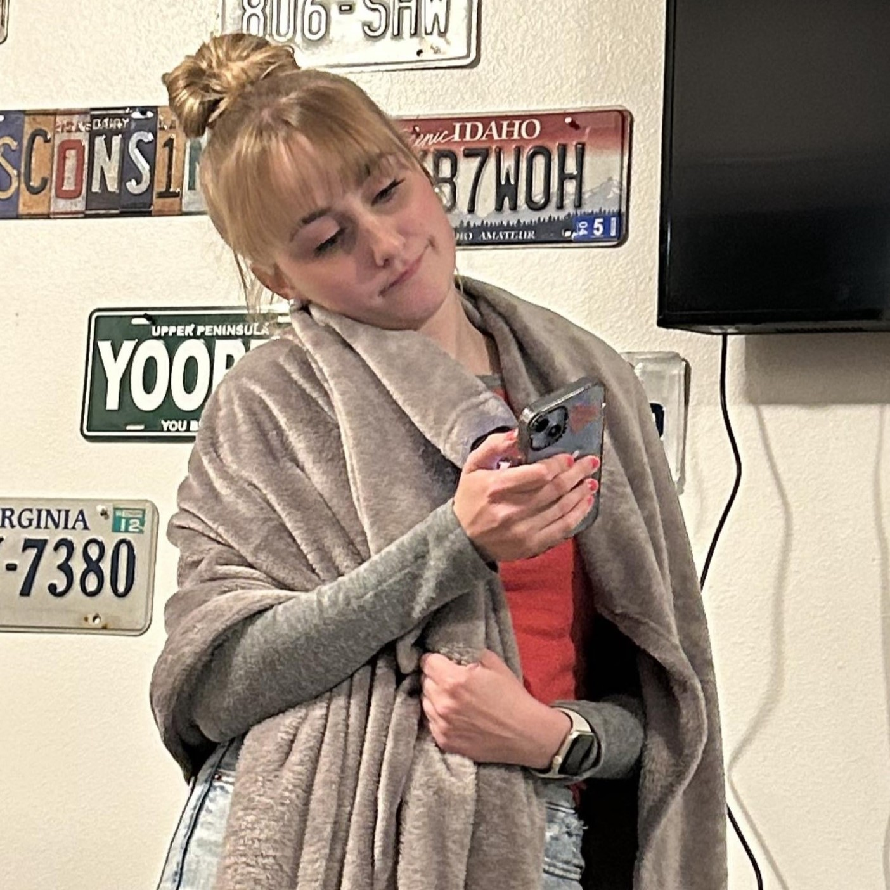
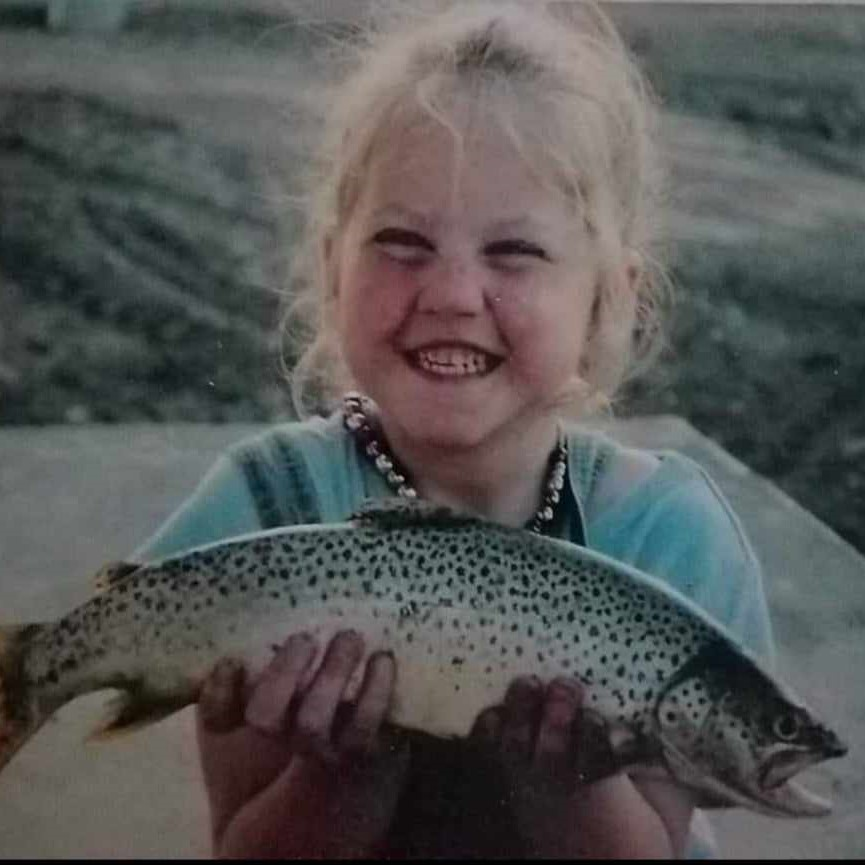
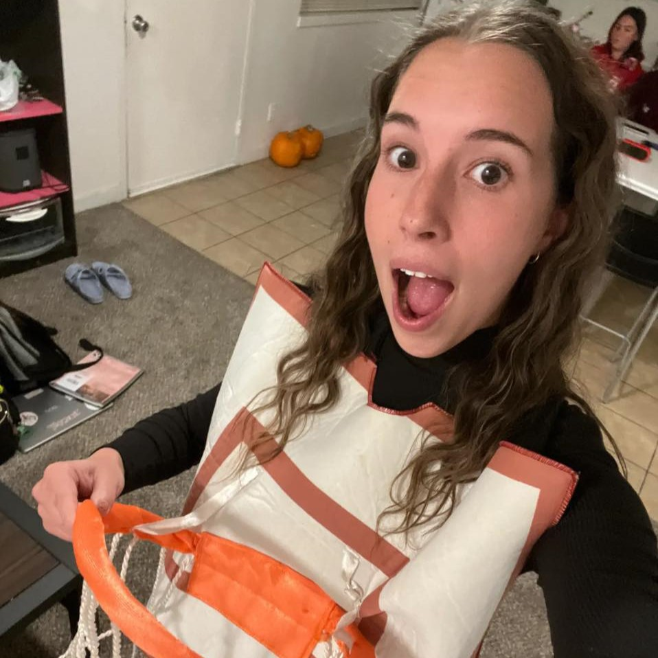
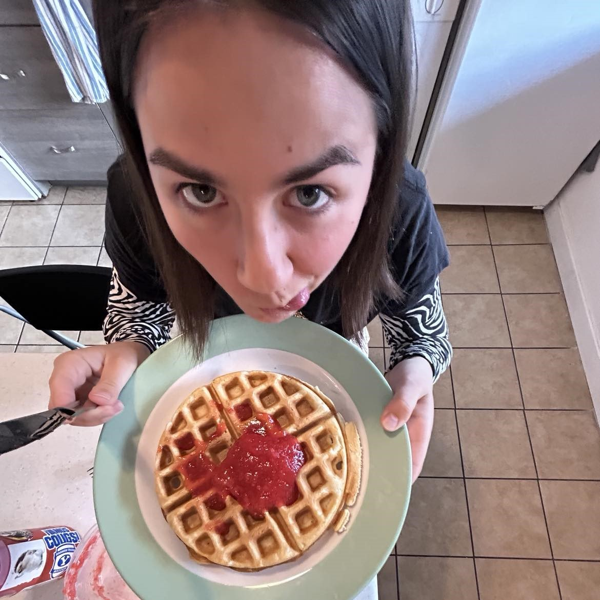

Mican
Mican's favorite color is pink. She is 23, and has a sister named Jess. Here are three things you must know about Mican.
- Mican likes all things Texas.
- She is obsessed with Bluebell icecream.
- The color pink cannot be emphasized enough.
Kacie
Kacie's favorite color is blue. She is 19 years old and plays the piano insanely well. She is also an avid Just Dance addict. Linked below is her most frequent dance!
Brooklyn
Brooklyn is an avid collector of license plates. She also enjoys disappearing for long mysterious walks, laughing, making bread, and sing with her guitar.
Nikki

Nikki's favorite color is green. She is on the BYU frisbee team and is cracked at frisbee. She has a distant husband named Logan. They are in the process of divorce (released from FHE parenthood).
Anna
Anna's favorite color is also pink. She is 21 years old and has a sister named Eva. She served a mission in Tacoma, Washington and I took her mission pictures. You can see them on my media page if you click the link below!
Go to my media page!Eliza
Eliza is quite the swifite. There is an interactive chart below displaying Taylor Swifts most recent tour, which Eliza attended in person and watched the movie they made of it as well. She is also known for her crazy socks. Her top three favorite sock designs are:
- Purple socks with lemons on them.
- Her cow socks
- She wears these on Sundays to match with Kyler
- Her bottles of ranch socks.

EJ's Resume
You can view my LinkedIn profile at the link below.
EJ Smith on LinkedIn- Education
- Brigham Young University, BYU Marriott School of Business Provo, UT Bachelor of Science in Pre-Strategic Management, Global Business Certificate
- GPA: 3.94, ACT: 30
- University Honors Student
- Ruth D. Carruth Scholarship, Academic
- BYU Marriott School Dean’s List Fall 2023
- Strategist for BYU Women in Entrepreneurship
- Experience
- BYU Honors Program Student Advisor (Aug 2023-Present)
- BYU Research Assistant (Jan 2024-Present)
- Project Manager Intern for MissionSixZero (Sept 2023-Dec 2023)
- Shift Lead for Pier 49 Pizza (Sept 2018- Jun 2023)
- Skills and Interests
- Proficiency in Excel, VBA, SQL, and Tableau
- Published writer in the Marriott Student Review for Winter 2024
- Part of the leadership team for a non-profit called the Outdoor Adventure Crew planning monthly outdoor events
- Avid artist doing nature photography at National Parks, general photography, short films, and custom paintings
- Hobbies include personal finance, entrepreneurship, running, and CrossFit
Back to top